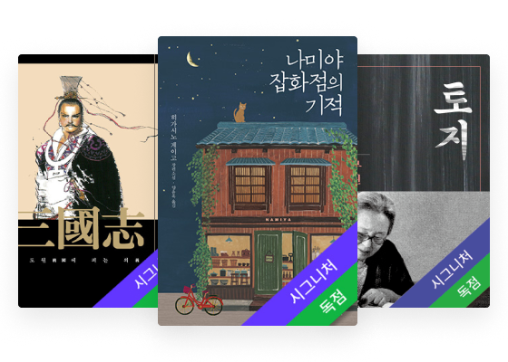

들을 콘텐츠를 정하고, 끊기지 않게 공급할 체계를 만들다
윌라는 성우가 낭독하는 오디오북과 전문가의 지식 강의(클래스)를 함께 제공하는 구독 서비스입니다. 구독이 이어지려면 이용자가 들을 콘텐츠를 계속 발견하고 선택할 수 있어야 했습니다. 저는 서비스 준비 단계에 첫 멤버로 합류해, 무엇을 상품으로 만들지, 이용자가 그 콘텐츠를 어떻게 발견하고 선택하게 할지, 이를 끊김 없이 공급할 체계를 어떻게 세울지를 결정했습니다.
1. 이용 방식에 맞는 콘텐츠 상품 구성
오디오북과 클래스의 서로 다른 청취 경험을 기준으로 무엇을 들려줄지 정하고 윌라만의 시리즈로 구체화했습니다.
2. 반복 가능한 제작과 공급 체계
한정된 인력으로 품질과 공급량을 함께 지키도록 제작 기준을 표준화하고 자체 제작과 제휴를 함께 운영해 라인업을 끊김 없이 공급했습니다.
3. 발견과 운영을 위한 CMS 확장
콘텐츠 등록과 관리에 쓰던 CMS(Content Management System, 콘텐츠 관리 시스템)를 편성과 전시, 수급 관리까지 넓혀 운영자가 직접 서비스를 운영하도록 했습니다.
청취 방식이 다른 이용자에게 무엇을 들려줄지 상품으로 정했습니다
서비스 초기에는 이용자가 선택할 콘텐츠의 구색을 갖추면서 윌라에서만 들을 수 있는 오리지널 콘텐츠를 함께 만들어야 했습니다. 오디오북은 성우의 낭독으로 작품을 감상하는 경험에, 클래스는 작가와 전문가의 목소리로 생각과 지식을 직접 듣는 경험에 주목해 무엇을 상품으로 만들지 정하고 대작 시리즈와 요일별 팟캐스트형 클래스, 명사 인터뷰처럼 서로 다른 관심사와 청취 상황에 맞는 콘텐츠로 구체화했습니다.
운영 중에는 이용자의 청취 패턴을 상품 결정의 근거로 삼았습니다. 기존 클래스는 대부분 회차당 20분 미만이었지만 오디오북을 듣는 이용자는 한 주제를 긴 호흡으로 따라가는 데 익숙했습니다. 이 선호에 맞춰 60~90분 분량의 오디오 특강 〈대한민국 명강을 만나다〉와 〈랜선 북토크〉를 새로 기획하고 오디오북을 낸 저자가 관련 주제로 강연하도록 연결해 두 유형을 함께 듣는 경험이 구독 만족으로 이어지게 했습니다.


한정된 인력으로 품질과 공급량을 지키려고 제작 기준을 표준화했습니다
이렇게 구성한 라인업을 안정적으로 제공하려면, 다음 콘텐츠를 발굴하고 제작하는 과정을 개인의 일이 아니라 조직의 작업 방식으로 남겨야 했습니다. 특히 클래스는 아이템을 찾는 일과 그 내용을 어떤 유형으로 전달할지 정하는 일이 중요했습니다. 아이템 도출부터 커리큘럼 구성, 미디어 유형 선정, 기획안 리뷰까지 절차를 정리하고 기획안 양식과 콘텐츠 개발 가이드로 남겼습니다. 하나의 아이템을 관련 주제로 확장하거나 오디오북과 연계해 기획해, 제작을 준비하는 반복 부담도 줄였습니다.
기획 이후의 제작 과정도 유형별 포맷으로 정리했습니다. 작업 단계와 산출물, 담당자의 역할을 명시하고 완성된 콘텐츠를 서비스에 출시할 수 있는지 판단할 검수 기준을 마련했습니다. 이 단일 기준을 강사 자체 제작과 외주 제작에 동일하게 적용해, 협업 주체가 달라도 일정과 품질을 예측할 수 있게 했습니다.
전체 라인업은 자체 제작과 제휴를 함께 계획해 구성했습니다. 직접 제작할 콘텐츠와 외부에서 확보할 콘텐츠를 구분하고 제휴가 필요하면 적합한 파트너를 선정해 계약과 도입 일정을 관리했습니다. 두 경로의 콘텐츠를 연간 편성표에 반영하고 주간과 일간 공개 일정을 관리했으며 신규 공개뿐 아니라 기존 콘텐츠의 종료와 갱신에 따른 라인업 변화까지 공급 계획에 미리 반영해 보강이 필요한 제작과 수급을 준비했습니다.
서로 다른 콘텐츠를 한 기준으로 관리하고, 편성과 전시까지 CMS를 넓혔습니다
자체 제작과 제휴로 확보한 콘텐츠를 서비스에 공급하려면, 서로 다른 유형과 구성을 공통 기준으로 관리할 수 있어야 했습니다. 초기 CMS를 기획할 때는 콘텐츠를 어떤 단위로 등록하고 그 안의 재생 파일과 정보를 어떻게 연결할지부터 정했습니다. 오디오북 한 권과 그 목차, 클래스 하나와 개별 강의 클립을 구분해 상위 콘텐츠와 하위 구성의 관계를 코드 체계에 반영했습니다. 자체 제작과 제휴 등 수급 경로까지 구분해 콘텐츠와 저작권 정보, 미디어 파일을 연결해 관리하도록 설계했습니다. 이 식별 체계는 콘텐츠 공급자(CP) 정산의 기준으로도 쓰이도록 함께 고려했습니다.
서비스 운영이 이어지면서 CMS의 범위를 콘텐츠 등록과 관리에서 편성과 전시로 넓혔습니다. 클립을 조합해 새 콘텐츠를 만드는 기능, 미리 오픈과 오픈, 종료 일자를 설정하는 콘텐츠 라이프사이클 관리, 지면별 큐레이션 관리 기능 등을 추가했습니다. 모두 고객에게 콘텐츠를 선보이고 노출 지면을 운영하기 위한 기능이었습니다.
제작 효율과 자립적 운영으로 서비스의 시작과 성장을 뒷받침했습니다
윌라에서는 콘텐츠를 끝까지 듣는 경험이 무료 체험에서 유료 구독으로 전환하는 데 중요한 지표였습니다. 〈대한민국 명강을 만나다〉와 〈랜선 북토크〉를 포함한 오디오 특강 시리즈는 평균 완청률 70%를 기록했고, 두 시리즈가 이용자의 몰입을 이끄는 윌라 클래스의 시그니처 콘텐츠로 자리 잡았습니다.
앞서 마련한 유형별 제작 포맷과 출시 검수 기준을 외주 프로덕션과의 협업에도 동일하게 적용했습니다. 이렇게 제작 과정을 표준화한 결과, 제작 리드타임을 30% 단축했고 같은 인적, 물적 자원으로 연간 자체 제작량을 약 3배로 늘렸습니다.
편성과 전시까지 넓힌 CMS로 운영자는 개발 배포를 기다리지 않고 콘텐츠의 공개 일정과 지면 구성을 직접 관리할 수 있게 되었습니다.
윌라에서 콘텐츠는 그 자체가 제품이자 경쟁력이었습니다. 그래서 저는 무엇을 만들지 정하는 일과 그것을 끊김 없이 공급하고 발견되게 하는 일을 하나의 제품 과제로 다뤘습니다. 이 경험에서 제가 배운 것은, 콘텐츠가 끊김 없이 이어지게 하는 시스템을 만들고 그 시스템을 누구나 동작시킬 수 있도록 조직에 전파해 역량으로 남기는 일이었습니다. 제작 기준과 CMS로 이어지는 이 체계가 안정적인 운영 환경을 뒷받침하며 구독 서비스를 지탱했습니다. 제품이 잘 동작하도록 시스템을 설계하고 조직이 스스로 운영하게 만드는 이 방식은 지금도 제가 제품과 조직을 함께 키우는 기준입니다.